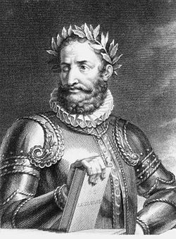

1143
Tiaguitos Page's
Portugal

Portugal, oficialmente República Portuguesa, é um país soberano unitário localizado no sudoeste da Europa, cujo território se situa na zona ocidental da Península Ibérica e em arquipélagos no Atlântico Norte.
0%
| Nome | Idade |
|---|---|
| Marcelo Rebelo de Sousa | || 40 ou 50 anos não me dei ao trabalho de ir ver. |
Mais páginas
Videos --> Stand Up Comedy :)
